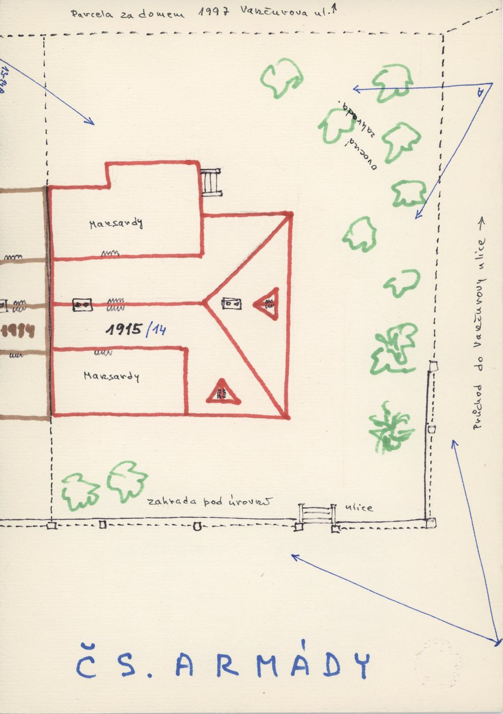
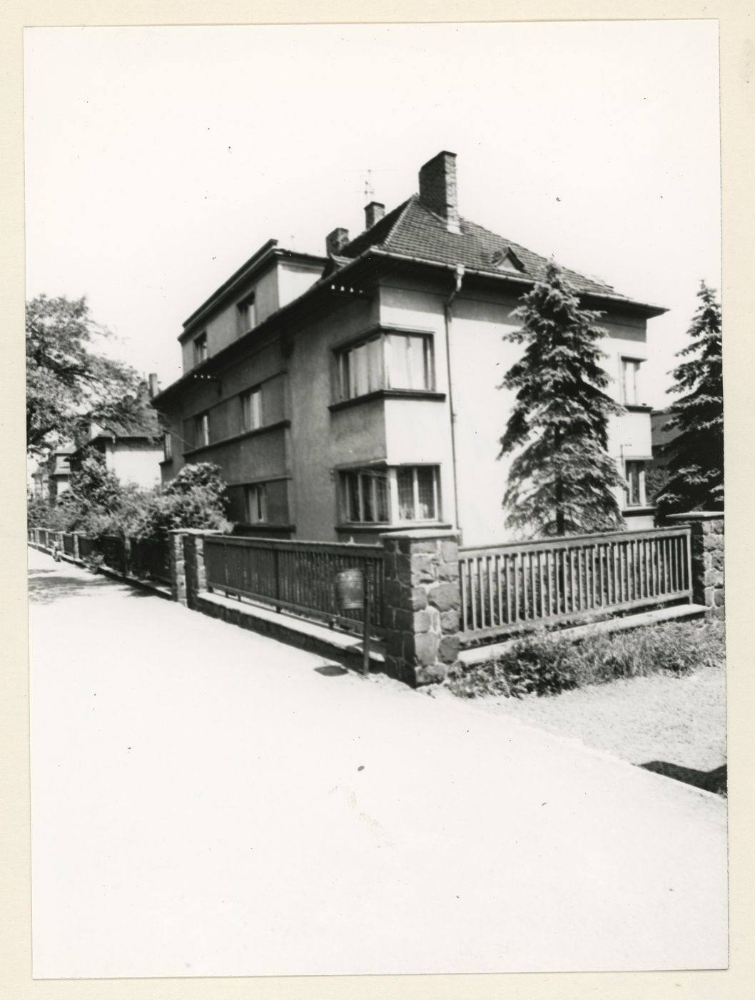
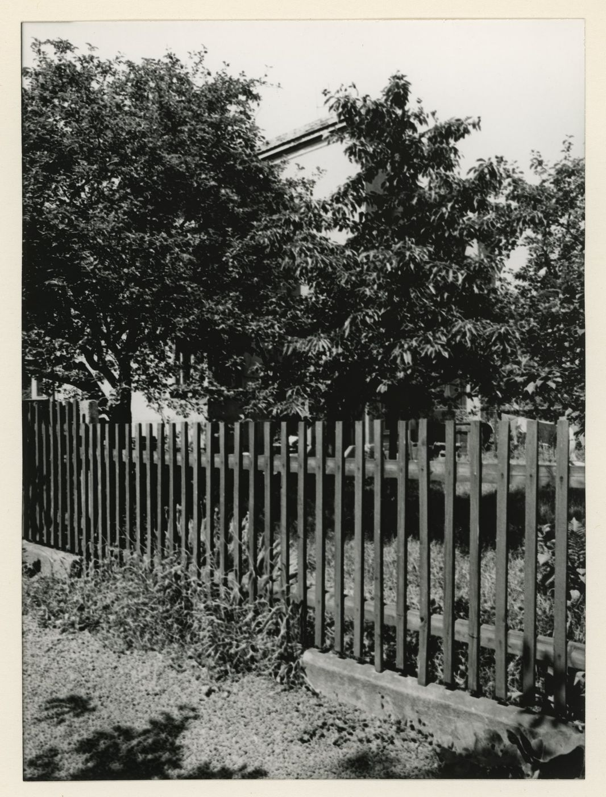
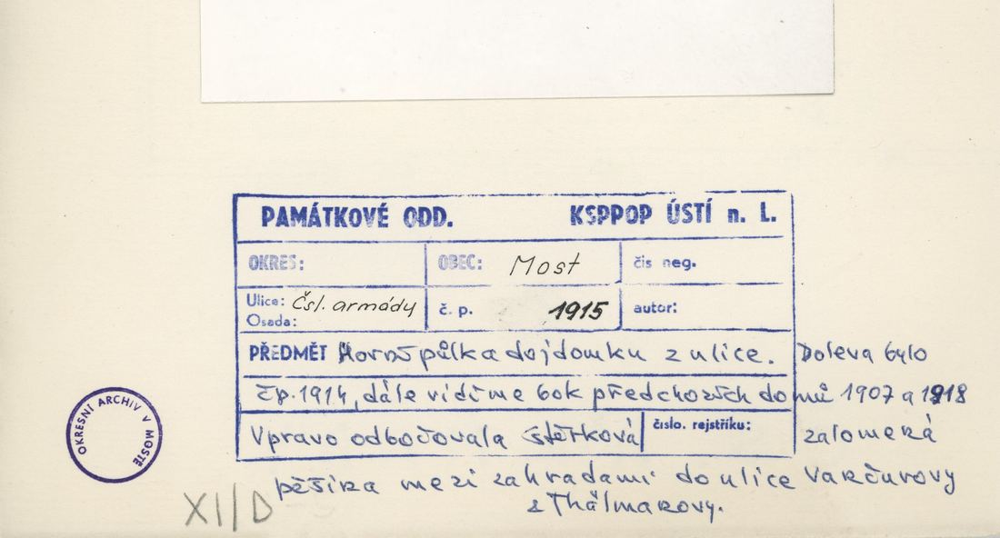
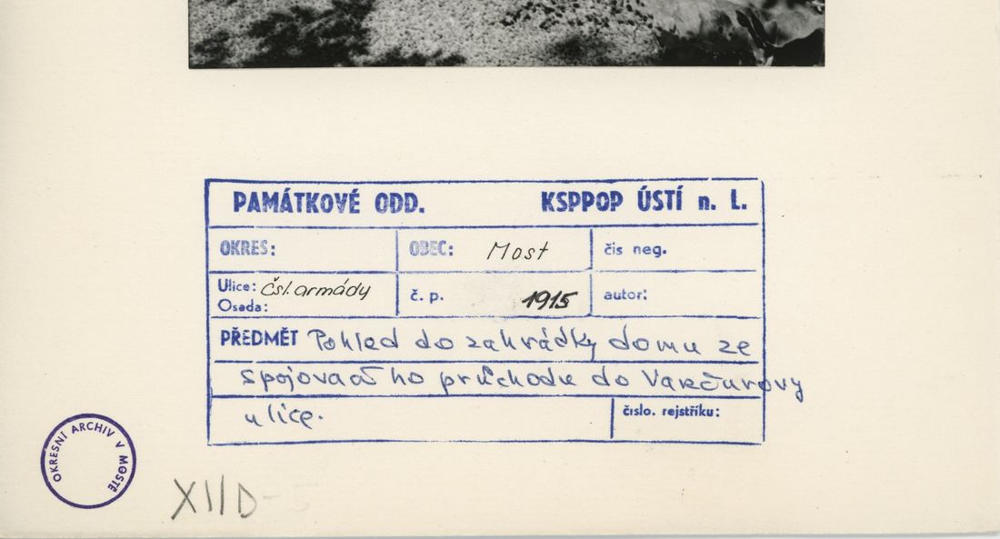
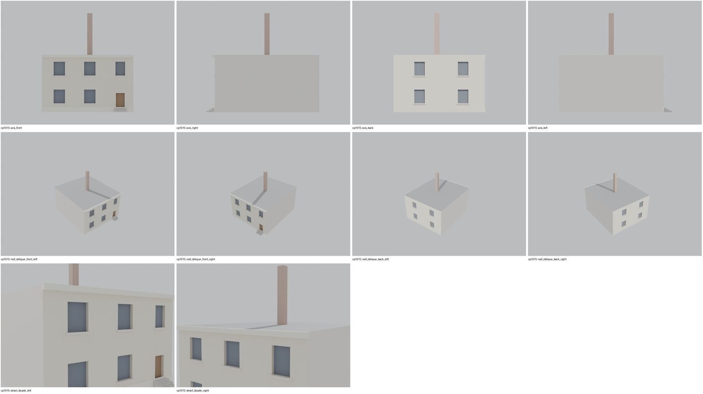

Identita domu
Pravá (JZ) polovina dvojdomu; vpravo „průchod do Vančurovy ulice“ (plán cp_1915_001). Foto cp_1915_001 (z ulice), cp_1915_002 (plot).
Použité prameny: cp_1915_001 PLANE; cp_1915_001/002 PHOTO.
GIS: bez GIS. V oblasti „Cs_Armady“ je dům veden podruhé se stejnými přílohami.
Prameny (9 příloh)
Všechny přílohy domu v databázi Libuše, každá otevřená a zapsaná v plan_search.json. Stav rešerše plánů: found; situační/střešní náčrt (ruční, nekótovaný, PLANE,BW) – není stavební výkres; půdorysné rozměry z GIS nebo odhad. Kliknutím otevřete větší náhled.


situační náčrt
SHA-256 8dfb083ef711…

fotografie
SHA-256 7c795be5fbcf…

fotografie
SHA-256 cb4624a6a334…


fotografie
SHA-256 de1dfcfe7ff4…


fotografie
SHA-256 3eb7a94ed42d…

archivní karta (rub) · výřez textu
SHA-256 7b5ae2f6fcf0…

archivní karta (rub) · výřez textu
SHA-256 d748688f42bc…


archivní karta (rub) · výřez textu
SHA-256 c2c65fc85a3b…


archivní karta (rub) · výřez textu
SHA-256 7c405f4ec2a2…
Model
| Revize modelu | r2 (zachované revize: r1, r2) |
|---|---|
| Poloha | odhad: sekvence podle orientačních čísel |
| Šířka průčelí | 10,50 m |
| Výška okapu | 6,60 m (odhad) |
| Podlaží | 2 |
| Střecha podle pramenů | valba s mansardovými vikýři |
| Střecha v modelu | bez vlastní střechy (nese ji sousední polovina dvojdomu) |
| Otvory | 10 |
| Vikýře / vedlejší hmoty | 0 / 0 |
| Polygonů | 154 |
Zdroje rozměrů, jak jsou zapsány v plánu modelu
| Rozměry | HYPOTHESIS: 10.5 x 12.0 m half of a semi-detached villa (no GIS footprint); position = archive sequence |
|---|---|
| Průčelí | photos cp_1914_001, cp_1915_001/002, cp_1914,1915_001: 2 storeys + mansard attic |
| Střecha | mansard-type attic with vertical dormer windows (photos); one roof carried by the left half |
Kontrola: 10 povinných pohledů

Nálezy
- pravá polovina (zrcadlo 1914) bez vlastní střechy – střechu nese model 1914 (sestava ulice)
Opravy
- bez oprav
Hypotézy
Vše níže je model_hypothesis, provisional, locked: false.
- zrcadlo 1914
- poloha sekvence
- semi-detached pair: the roof over both halves is carried by the left (lower orientation number) half model; the right half has no own roof
- entrance at the outer end of each half (uncertain)
- all storey heights, opening sizes and roof pitches are estimates from photographs (model_hypothesis, provisional, locked=false)
Soubory
- Model čp. 1915, GLB
- Pracovní složka: F:\MOST\output\zatecka_street_claude_2026-10-17\houses\cp1915\
plan_search.json,geometry_plan.json,README.md,texture_handoff_spec.json,r2/cp_1915_G_r2.blend,r2/qa/qa_review.json